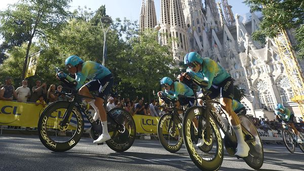

Jul 09, 2026 05:22 AM

Chinese cycling enthusiasts casting their eyes over the start-line of the Tour de France in Barcelona on July 4th would surely have felt disappointed. In 2014, Ji Cheng, the first from China to compete in the race, collected the questionable distinction of the lanterne rouge, awarded for last place. China has not returned to the Tour since. Even so, the country is playing an increasingly important role in the sport.
Roughly 60% of the world’s bikes are made in China. Yet although it supplies parts for many Western brands, including premium ones such as Pinarello, its own models have frequently been dismissed as low quality. That may soon change. In recent years Chinese companies have been launching their own high-performance bikes, which cost around 40% less than models with similar specifications from the incumbents.
Chinese bikes appeared in last year’s Tour de France for the first time, with Kazakhstan’s team riding models from X-Lab, a division of XDS, a Chinese carbon-fibre manufacturing giant (and the team’s new title sponsor). “A Chinese bike has won the Tour de France many times,” argues Patrick Pan of X-Lab, just not under a Chinese brand. Quick Pro, a competitor, made its World Tour debut in March this year. Pardus, ridden by the Chinese team at the Paris Olympics, announced in May that it was expanding into Europe.
The ultimate prize is the consumer market. Accordingly, these brands are establishing a retail presence abroad. X-Lab has signed with around 300 dealers in America since its launch there in April. The growth of Panda Podium, an e-commerce site for Chinese bikes and parts, also helps. And many brands are building direct-to-consumer channels.
Out-performing Western brands will not be easy. China is unlikely to collect many gongs from the Tour this year; Kazakhstan’s team has already had a crash in the first stage. But as Chinese bikes become a more common sight in such tournaments, their credibility will grow. The wheels are in motion. ■
To track the trends shaping commerce, industry and technology, sign up to “The Bottom Line”, our weekly subscriber-only newsletter on global business.